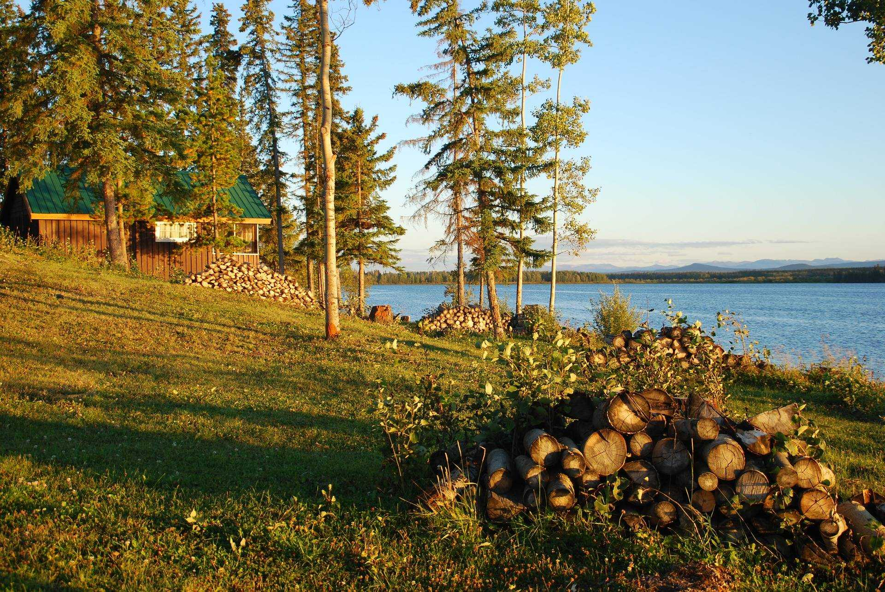

Familjeägd camping sedan 20 år
Östansjö Camping ligger naturskönt vid Storströmsjöns strand, på marker som fram till slutet av 1990-talet var del av ett jordbruk. Gården såldes sedan till Viveca och Göran Sten, vildmarksguide respektive skogsmästare, som valde att göra om verksamheten till en camping med fokus på friluftsliv och naturupplevelser.
Campingen är ett familjeägt företag och drivs med målet att ta tillvara på den lokala kunskapen. Därför samarbetar vi med flera olika företag och aktörer i området för att kunna erbjuda våra gäster bästa möjliga semesterupplevelse.
